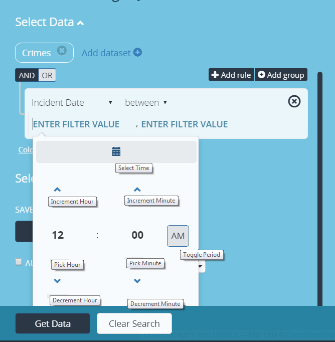

There are operators used in conjunction with dates and time being applied to a search.
-
between - presents two value filter fields and returns data that’s between the two filter values specified.
-
greater - returns all data that’s after than the date/time specified.
-
less - returns all data that’s before than the date/time specified.
To add a date to a query, enter specific search parameters in Add data-set section in the find data panel. In the parameter drop-list select a date parameter from the drop-list of the specified data-set.
When the date parameter is applied, the operand “between” and two search fields will appear called “ENTER FILTER VALUE” as the default. Place the mouse into “ENTER FILTER VALUE” field, to add time and date, the calendar appears with current date as the default. The calendar has optional ways on how a user can enter and display date into the application when setting up a search.

| Element No. | Element Description |
|---|---|
| 1. | Operators - determines how dates are entered. |
| 2. | ENTER FILTER VALUE - where time is entered. |
| 3. | Month/Year Identifier - Displays the Month/Year being presented for a search. When calendar is displayed, current month/year appear as default. |
| 4. | less than carat - allows user to enter past dates. |
| 5. | Greater than carat - allows users to enter current or future dates. |
| 6. | weekday - day of the week |
| 7. | date of the month - specified day of the month |
| 8. | Select Time - switches between the calendar and time panel allowing the user to enter time. Time is displayed as 12 hour. |

| Select Time Description |
|---|
| Select Time: Switches back to the calendar panel |
| Increment Hour: Increases hour in time |
| Increment Minute: Increase minutes in time |
| Pick Hour: Active link it switches to the hour panel where an hour can be choose from numerically (0-12) |
| Pick Minute: Active link it switches to the minute panel where minutes chosen in increments of 5s (00 thru 55) |
| Toggle Period: Meridiem Selector |
| Decrement Hour: Decrease hour in time |
| Decrement Minute: Decrease minutes in time |
Using Relative Time in a Search
Here are some examples in using dates and times in combination of a search. Some searches that occur displays results from current date/time if not specified. Always default to current date/time when placing cursor in the value filter.
- yesterday
- tomorrow
- today
- day (i.e. a day ago, 2 days ago, etc.)
- week (i.e. a week ago, 2 weeks ago, etc.)
- month (i.e. a month ago, 2 months ago, etc.)
- year (i.e. a year ago, 2 years ago, etc.)
- seconds (i.e. 15 seconds ago, 30 seconds ago, etc.)
- minutes (i.e. 15 minutes ago, 30 minutes ago, etc.)
- hours (i.e. 1 hour ago, 2 hours ago, etc.)
Relative Time
Using days
-
Crimes
- Incident Date between 9 days ago and 7 days ago (from the current date/time)
-
Crimes
- Incident Date between 7/22/2016 9:30:00 AM and a week ago
-
Crimes
- Incident Date between a week ago and today
Using hours
- Crimes
- Incident Date between 3 hours ago and 2 hours ago (from the current date/time)
Using greater and less than in relative time
-
Crimes
- Incident Date greater than 4 days ago
-
Crimes
- Incident Date greater than a week ago
-
Crimes
- Incident Date less than 10 hours ago
-
Crimes
- Incident Date less than 30 minutes ago
-
Crimes
- Incident Date less than today
Absolute Time
- Crimes
- Incident Date between 8/31/2016 9:30:00 AM and 8/31/2016 10:30:00 AM
Using Seconds
- Crimes
- Incident Date between 8/31/2016 10:30:00 AM and 8/31/2016 10:30:58 AM
Using greater and less than in absolute time
-
Crimes
- Incident Date greater than 7/22/2017 11:30:00 PM
-
Crimes
- Incident Date less than 7/22/2017 11:30:00 PM
Users can apply time series to a search. The search will return all plotted data from the time series specified within the defined search.

Relative Time Search